Deployments#
Deployment overview#
Backend.AI lets you deploy AI models as inference services through the Deployments feature. A deployment exposes a model behind a stable endpoint URL that end-user applications (mobile apps, web service backends, internal tools, and so on) can call to run inference.

A deployment extends a regular compute session with automated maintenance, replica scaling, and a permanent endpoint address that does not change as replicas come and go. You only specify the scaling parameters you want; Backend.AI creates, monitors, and terminates the underlying inference sessions automatically so you do not have to manage them by hand.
Deployments page#
The Deployments page displays a list of all deployments in the current project. You can access it by clicking Deployments in the sidebar menu.
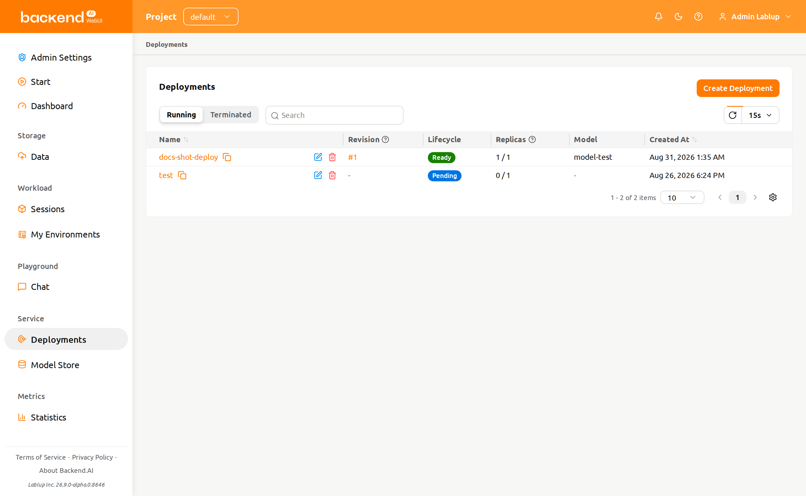
At the top of the page, you can filter deployments by lifecycle stage:
- Running: Shows deployments that are currently running or being created. This is the default view.
- Terminated: Shows deployments that have been terminated.
Click the Create Deployment button to open the Create Deployment modal.
Creating a deployment#
Creating a deployment is a two-step flow:
- Create the deployment — a lightweight container that defines the deployment's identity (name, visibility, deployment metadata, and resource group).
- Add a revision — a configuration snapshot that defines what actually runs (start command, environment variables, runtime variant, image, resources, model storage).
Each deployment can hold many revisions. Only one revision is current (serving traffic) at a time, and you can switch between revisions from the Revisions tab on the Deployment Detail Page.
Create deployment modal#
On the Deployments page, click the Create Deployment button to open the Create Deployment modal. The modal collects only deployment-level metadata; no revision is created at this point.
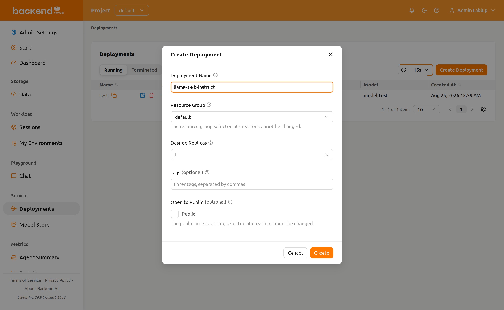
The modal contains the following fields:
- Deployment Name: A unique name used to identify the deployment across the dashboard, API, and the endpoint URL.
- Resource Group: The resource group where the deployment will run. If only one resource group is available to your project, the field is auto-selected and you can proceed without choosing one manually.
- Desired Replicas: The number of replicas to keep running for this deployment. The system scales the active pool toward this target.
- Tags: Optional labels for organizing and filtering deployments. Press Enter or comma to add.
- Open to Public: When enabled, the endpoint is reachable without an access token. When disabled, every request must carry a token. See Access Tokens.
From the moment the modal opens, a warning notice sits under the Resource Group field — "The resource group selected at creation cannot be changed." — and another under the Open to Public field — "The public access setting selected at creation cannot be changed."
The resource group belongs to the deployment rather than to a revision, so you cannot move a deployment to a different resource group later — not by editing the deployment and not by adding a new revision. Open to Public is fixed in the same way: in the Edit Deployment modal the checkbox is read-only and the same notice is shown under it. Pick both values before you create the deployment; if you need different ones, create a new deployment.
Click Create to create the deployment. You are then taken to the Deployment Detail Page, where the No Current Revision warning is shown until you add the first revision.
To change deployment-level settings (name, desired replicas, or tags) after creation, click the Edit button on the Service Info card, update the values in the Edit Deployment modal, and save your changes. The resource group and Open to Public setting cannot be changed here — both are fixed at creation, as described above.
Add revision#
A revision captures every setting needed to run the inference server — image, start command, resources, model mounts, and environment variables. From the Deployment Detail Page, click Add Revision to open the modal.
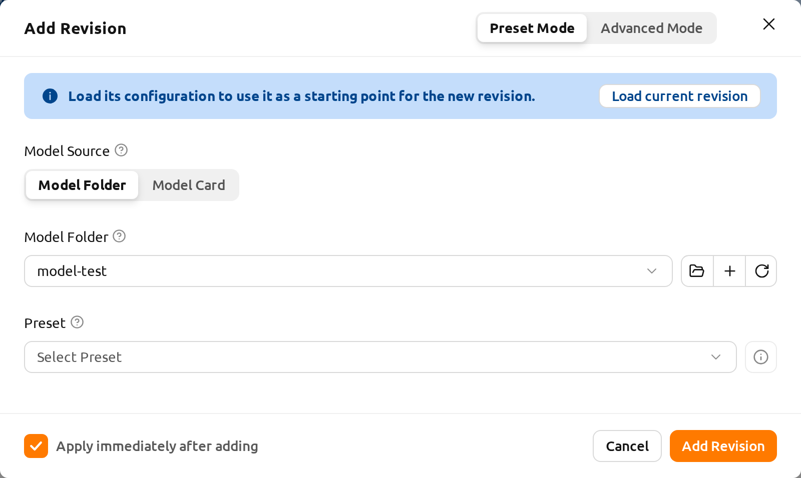
Use the Preset Mode / Advanced Mode switcher in the modal title to select how to configure the revision.
When the deployment already has a current revision, a Load current revision banner appears above the form in both modes. Click Load current revision to pre-fill the form with the current revision's configuration as a starting point; the modal switches to Advanced Mode automatically if needed. The banner is not shown when the deployment has no current revision yet, and it disappears once you load the configuration.
Preset mode#
Quickly add a revision using a pre-defined deployment preset.
- Model Source: Where this revision's model comes from — Model Folder or Model Card. The selector below changes to match your choice, and switching the source clears the model and preset selections you already made.
- Model Folder (Model Folder source): The storage folder to mount on each replica.
- Model Card (Model Card source): The model card to deploy. Its backing model folder is mounted on each replica, and only presets compatible with that card are offered. Click the ⓘ button next to the selector to open the Model Card Detail drawer for the selected card.
- Preset: A deployment preset compatible with the deployment's resource group. Click the ⓘ button next to the selector to view the preset details. With the Model Card source, the selector stays disabled with the hint "Please select a model card first." until you pick a card.
If the model card you selected has no model folder to mount, the revision is not created and an error message appears: "The selected model source has no model folder to mount. Choose a different model card or model folder." Pick a different model card, or switch the source back to Model Folder.
If no presets are available for the deployment's resource group, an informational message is shown. Switch to Advanced Mode to configure the revision manually.
Advanced mode#
Configure every revision setting directly.
The form contains the following sections:
- Model & Runtime: Select the model folder, its mount destination, and the runtime variant. For
vLLM/SGLangvariants, a Runtime Parameters panel appears; for theCustomvariant, a Service Configuration section appears. See the sections below for details on runtime-specific fields. - Health Check and Pre-Start Actions: Configure health checking and the actions to run before the inference server starts. Both are available for every runtime variant.
- Environments: Choose the container image (Environment / Version) and add environment variables.
- Cluster & Resources: Allocate CPU, memory, and accelerator resources.
- Advanced Settings (collapsible): Set the model definition file path and mount additional storage folders alongside the model folder.
At the bottom of the modal, check Apply immediately after adding to activate the new revision immediately upon creation. If unchecked, the revision is saved in an inactive state and you can apply it later from the Revisions tab.
Add revision: field reference#
The subsections below describe revision-level fields in detail. They apply both when adding a revision manually in Advanced Mode and when you want to understand what each field controls.
Model folder mount#
Every revision mounts one model storage folder into each replica. The fields directly below the folder selector control where that folder appears inside the container.
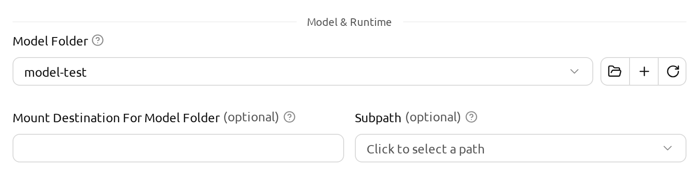
- Model Folder: The model storage folder to mount on each replica.
- Mount Destination For Model Folder: The path inside the container where the model storage folder is mounted (default:
/models). - Subpath: A subfolder inside the model folder to mount instead of the folder root. Click the field to open a directory picker and choose the subfolder from the selected model folder's directory tree. Leave it unset to mount the folder root.
Service configuration (custom runtime only)#
Runtime variants that read their configuration from the model folder — the Custom variant, for example — show a Service Configuration section below the Runtime selector. The section is expanded by default and defines how the inference server process is started.
- Execution: How the command is run.
- Shell: The command runs through a shell (
bash -c "..."), so shell operators work. Recommended for most cases. - Exec: The command runs directly as arguments, with no shell involved. Use this only when the command has to run without a shell — for example, on an image that has no shell binary.
- Shell: The command runs through a shell (
- Shell: The shell binary used to run the command (for example,
/bin/bash). Shown only in Shell mode, where it is required. The binary must exist in the container image, or the service fails to start. - Command: The command that launches the inference server, for example
python -m http.server 8000. In Shell mode this is a multi-line box; in Exec mode the field is relabeled Command (argv) and becomes a single-line input. - Port: The container port that the inference server listens on (2–65535).
In Shell mode the command is handed to the shell, so operators such as ;, |, &&, $VAR, and redirection are interpreted just as they are in a terminal:
chmod +x /setup.sh; vllm serve /modelsIn Exec mode the same line is split into arguments and executed directly, so those operators are passed through as literal text. Separate arguments with spaces and quote any argument that contains spaces — for example, --name "my model". When you need shell syntax, switch Execution back to Shell rather than wrapping the command in /bin/bash -c "..." yourself.
Health check and pre-start actions#
The Enable Health Check and Pre-Start Actions fields follow the Service Configuration section and are shown for every runtime variant.
- Enable Health Check: When enabled, the system periodically sends HTTP requests to the inference server to verify it is responding correctly. When disabled (the default for new revisions), no health check is configured and unhealthy replicas are not automatically detected. Turn this on for production deployments. When Enable Health Check is checked, the following additional fields appear:
- Path: The HTTP endpoint path called during service health checks (default:
/health). - Interval: Seconds between consecutive health checks.
- Max Retries: Maximum consecutive health check failures before the replica is marked
UNHEALTHY. - Max Wait Time: Timeout in seconds for each individual health check request.
- Expected Status Code: The HTTP response status code that indicates a healthy service.
- Startup Grace Period: Grace period in seconds after container startup during which failed health checks are tolerated; the replica becomes active on the first successful check. Increase this for large models that take longer to load.
- Path: The HTTP endpoint path called during service health checks (default:
- Pre-Start Actions: Actions to execute before the model service starts. Click Add Pre-Start Action to add a row, then fill in Action (the action name, for example
wait_for_file) and Args (JSON) (its arguments as a JSON object, for example{}). Both fields are required on every row, and the arguments must be valid JSON. For the list of supported actions, refer to Description for Service Action Supported in Backend.AI Model Serving.
The path to the model definition file itself lives in the Advanced Settings panel at the bottom of the form. For instructions on creating that file, refer to the Creating a Model Definition File section.
Runtime parameters (vLLM / SGLang)#
When you select the vLLM or SGLang runtime variant, a Runtime Parameters section appears in place of the Service Configuration section. This section lets you configure the serving framework without editing configuration files manually.
Parameters are organized into tab-separated categories. The available tabs vary by runtime variant.
Unchanged parameters use the runtime's default values.
Administrators can mark individual parameters as required. Required parameters are indicated by a red asterisk (★) next to the label. Submitting the form with an empty required parameter is blocked — the field shows an inline validation error even if the parameter is on an unvisited tab.
Enable Health Check
The Enable Health Check and Pre-Start Actions fields sit below the Runtime Parameters section and work exactly as described in Health check and pre-start actions — they are shown for vLLM and SGLang just as they are for the Custom variant.
vLLM Runtime Parameters
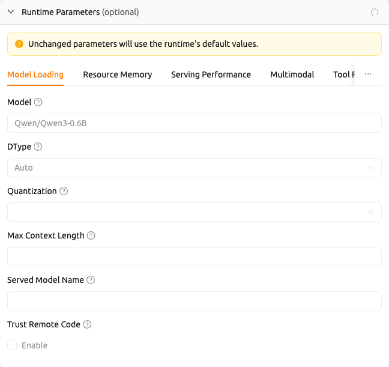
vLLM provides the following tabs: Model Loading, Resource Memory, Serving Performance, Multimodal, Tool Reasoning, and others.
Key fields in the Model Loading tab:
- Model: The name or path of the model to use.
- DType: The data type for model weights and computation (for example,
Auto,float16,bfloat16). - Quantization: The model quantization method (for example,
awq,gptq,fp8). - Max Model Length: The maximum context length (number of tokens) the model can process.
- Served Model Name: The model name to expose at the API endpoint.
- Trust Remote Code: Allows execution of custom model code from the model repository.
SGLang Runtime Parameters
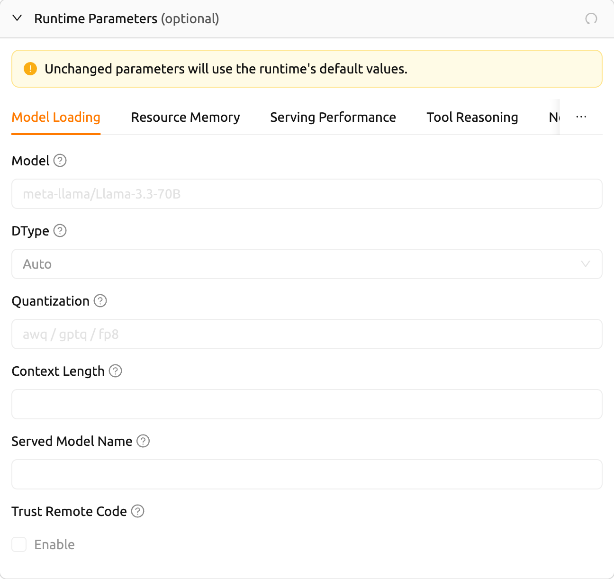
SGLang provides the following tabs: Model Loading, Resource Memory, Serving Performance, Tool Reasoning, and others.
Key fields in the Model Loading tab:
- Model: The name or path of the model to use.
- DType: The data type for model weights and computation (for example,
Auto,float16,bfloat16). - Quantization: The model quantization method (for example,
awq,gptq,fp8). - Context Length: The maximum context length the model can process.
- Served Model Name: The model name to expose at the API endpoint.
- Trust Remote Code: Allows execution of custom model code from the model repository.
In addition to runtime parameters, the vLLM and SGLang runtime variants pre-populate specific environment variables in the Environments section:
- vLLM:
BACKEND_MODEL_NAME,VLLM_QUANTIZATION,VLLM_TP_SIZE(tensor parallelism),VLLM_PP_SIZE(pipeline parallelism),VLLM_EXTRA_ARGS(extra CLI arguments) - SGLang:
BACKEND_MODEL_NAME,SGLANG_QUANTIZATION,SGLANG_TP_SIZE(tensor parallelism),SGLANG_PP_SIZE(pipeline parallelism),SGLANG_EXTRA_ARGS(extra CLI arguments)
Environments#
The Environments section is present for all runtime variants.
- Environment / Version: The container image used for the inference server. Selecting a runtime variant filters this list to images that are compatible with that runtime.
- Image Name (Manual): A free-text image reference, shown only when your administrator has enabled manual image names on the server. Typing here clears the Environment / Version selection, and vice versa — the two are alternative ways of choosing the same image.
- Environment Variables: Key/value pairs passed to the inference server container. For
vLLMandSGLang, a set of runtime-specific variables (listed above) are pre-populated. You can add, edit, or remove entries freely. As you type a variable name, the field suggests common environment variable names —HF_TOKEN,WANDB_API_KEY,AWS_ACCESS_KEY_ID,AWS_SECRET_ACCESS_KEY,AWS_DEFAULT_REGION,HTTP_PROXY,HTTPS_PROXY, andNO_PROXY— alongside the ones the selected runtime variant defines. A name already used by another row is left out of the list. Once a known name is set, the value field shows a matching hint, for example "Your Hugging Face access token" forHF_TOKEN.
Entering an image name manually#
When you type into Image Name (Manual) instead of picking from the dropdown, the reference you entered is looked up against the images registered on the server when you submit the form, and the revision is created from the image that matches.
- Enter a reference in the same form the registry uses, for example
cr.backend.ai/stable/python:3.10-ubuntu20.04. - You can append an
@architecture suffix — for examplecr.backend.ai/stable/python:3.10-ubuntu20.04@aarch64— to pin a specific architecture. Without the suffix, the manager's default architecture is used.
If no registered image matches what you typed, the revision is not created and an inline error appears on the field: "The manually entered image could not be found. Enter a registered image reference, or pick one from the list." The form scrolls to the field so you can correct it. Correct the reference, or clear the field and choose an image from Environment / Version instead.
Because the lookup happens on submit, the error appears after you click the submit button rather than while you type.
Cluster and resources#
The Cluster and Resources section lets you specify the compute resources to allocate to each replica.
- Resource Preset: A pre-configured bundle of CPU, memory, and accelerator allocations. Available presets are filtered by the deployment's resource group. You can also configure resources manually (CPU, memory, GPU) without selecting a preset.
Advanced settings#
Expand the Advanced Settings collapse panel to point at the model definition file and to mount additional storage folders alongside the model storage folder.
- Model Definition File Path: The path to the model definition file within the model storage folder (default:
model-definition.yaml). Shown only for runtime variants that read their configuration from the model folder, such asCustom. - Additional Mounts: A table of storage folders to mount into the inference server container. Only general-purpose (non-model) folders in
readystate are listed. Hidden folders (names starting with.) and the model storage folder itself are excluded.
Configuration files for custom runtime#
Creating a model definition file#
You can configure the model definition file name. But if you don't
input any other input field in model definition file path, then the system will
regard it as model-definition.yml or model-definition.yaml.
The model definition file contains the configuration information required by the Backend.AI system to automatically start, initialize, and scale the inference session. It is stored in the model type folder independently from the container image that contains the inference service engine. This allows the engine to serve different models based on specific requirements and eliminates the need to build and deploy a new container image every time the model changes. By loading the model definition and model data from the network storage, the deployment process can be simplified and optimized during automatic scaling.
The model definition file follows the following format:
models:
- name: "simple-http-server"
model_path: "/models"
service:
start_command:
- python
- -m
- http.server
- --directory
- /home/work
- "8000"
port: 8000
health_check:
path: /
interval: 10.0
max_retries: 10
max_wait_time: 15.0
expected_status_code: 200
initial_delay: 60.0Key-Value Descriptions for Model Definition File
Fields without "(Required)" mark are optional.
name(Required): Defines the name of the model.model_path(Required): Addresses the path of where model is defined.service: Item for organizing information about the files to be served (includes command scripts and code).pre_start_actions: Actions to be executed before thestart_command. These actions prepare the environment by creating configuration files, setting up directories, or running initialization scripts. Actions are executed sequentially in the order defined.action: The type of action to perform. See Prestart Actions for available action types and their parameters.args: Action-specific parameters. Each action type has different required arguments.
start_command(Required): Specify the command to be executed in model serving. Can be a string or a list of strings.port(Required): Container port for the model service (e.g.,8000,8080).health_check: Configuration for periodic health monitoring of the model service. When configured, the system automatically checks if the service is responding correctly and removes unhealthy instances from traffic routing.path(Required): HTTP endpoint path for health check requests (e.g.,/health,/v1/health).interval(default:10.0): Time in seconds between consecutive health checks.max_retries(default:10): Number of consecutive failures allowed before marking the service asUNHEALTHY. The service continues receiving traffic until this threshold is exceeded.max_wait_time(default:15.0): Timeout in seconds for each health check HTTP request. If no response is received within this time, the check is considered failed.expected_status_code(default:200): HTTP status code that indicates a healthy response. Common values:200(OK),204(No Content).initial_delay(default:60.0): Time in seconds to wait after container creation before starting health checks. This allows time for model loading, GPU initialization, and service warmup. Set higher values for large models (e.g.,300.0for 70B+ LLMs).
Understanding Health Check Behavior
The health check system monitors individual model service containers and automatically manages traffic routing based on their health status.
① AppProxy: Traffic Routing Control
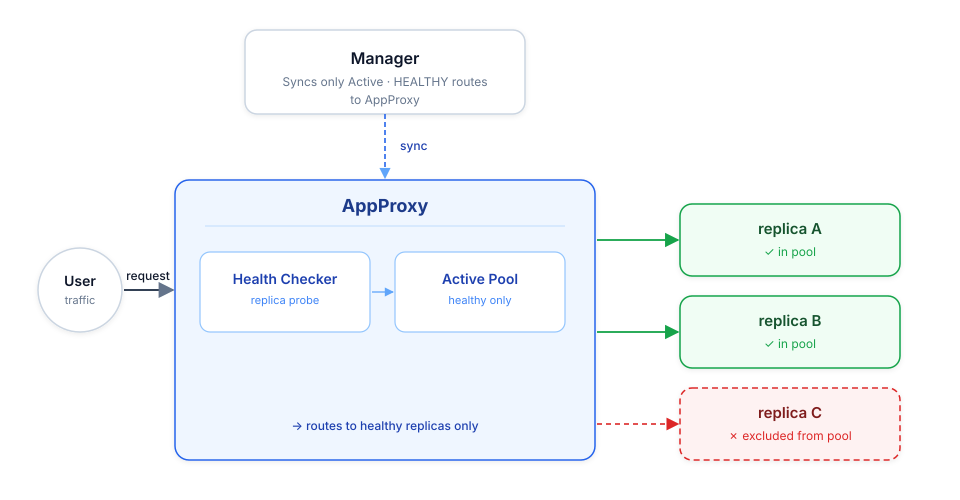
② Manager: Health State Management and Eviction
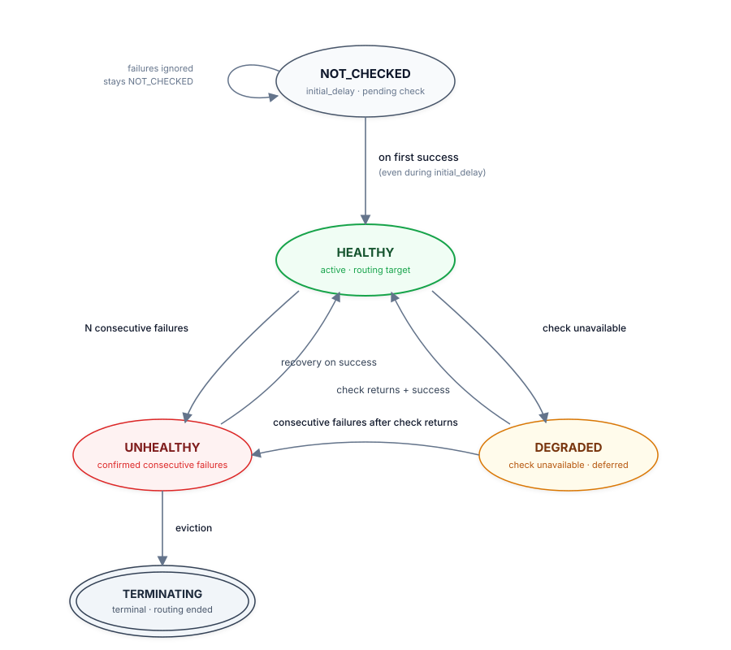
The internal health status (used for traffic routing) may not be immediately synchronized with the status displayed in the user interface.
Time to UNHEALTHY:
Initial startup:
initial_delay + interval × (max_retries + 1)Example with defaults: 60 + 10 × 11 = 170 seconds (about 3 minutes)
During operation (after healthy):
interval × (max_retries + 1)Example with defaults: 10 × 11 = 110 seconds (about 2 minutes)
Description for Service Action Supported in Backend.AI Model Serving
write_file: This is an action to create a file with the given file name and append control to it. the default access permission is644.arg/filename: Specify the file namebody: Specify the content to be added to the file.mode: Specify the file's access permissions.append: Set whether to overwrite or append content to the file asTrueorFalse.
write_tempfile: This is an action to create a file with a temporary file name (.py) and append content to it. If no value is specified for the mode, the default access permission is644.body: Specify the content to be added to the file.mode: Specify the file's access permissions.
run_command: The result of executing a command, including any errors, will be returned in following format (out: Output of the command execution,err: Error message if an error occurs during command execution)args/command: Specify the command to executed as an array. (e.g.python3 -m http.server 8080command goes to ["python3", "-m", "http.server", "8080"] )
mkdir: This is an action to create a directory by input pathargs/path: Specify the path to create a directory
log: This is an action to print out log by input messageargs/message: Specify the message to be displayed in the logs.debug: Set toTrueif it is in debug mode, otherwise set toFalse.
Uploading model definition file to model type folder#
To upload the model definition file (model-definition.yml) to the
model type folder, you need to create a virtual folder. When creating
the virtual folder, select the model type instead of the default
general type. Refer to the section on creating a storage folder in the Data page for
instructions on how to create a folder.
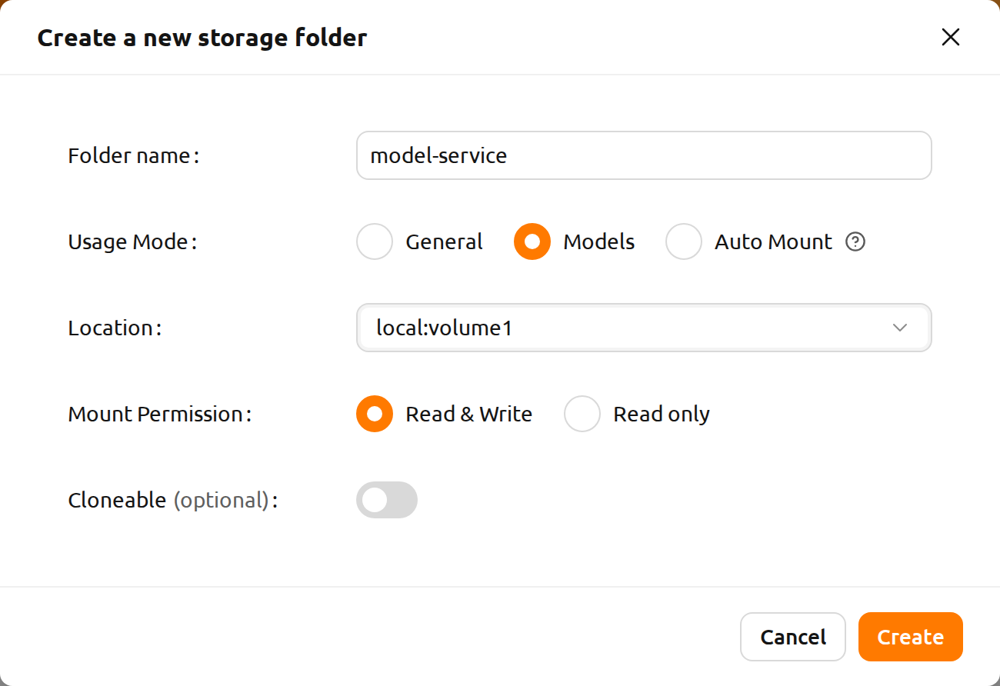
After creating the folder, select the MODELS tab in the Data
page, click on the recently created model type folder icon to open the
folder explorer, and upload the model definition file.
For more information on how to use the folder explorer,
please refer to the Explore Folder section.
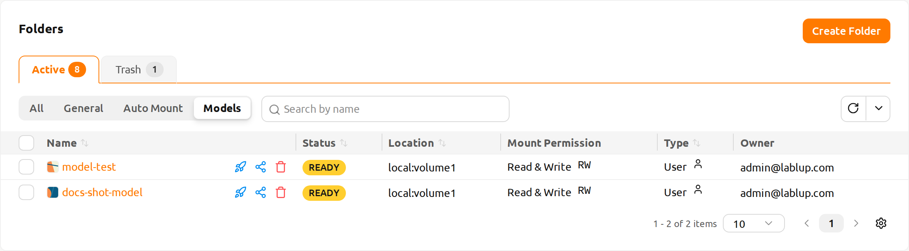
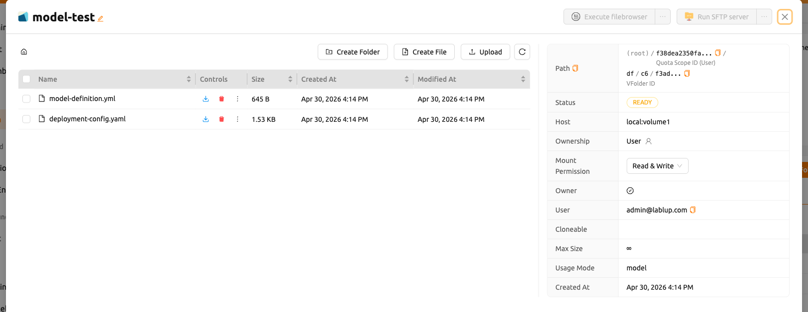
Pre-configuring a deployment (deployment-config.yaml)#
You can place a deployment-config.yaml file in a model folder to pre-configure the resources, environment, and runtime settings used when a deployment is created from that model. When the file is present, its values are used as defaults; anything you set at deployment time (in the Add Revision form or the API request) overrides them.
A service-definition.toml file (TOML format) in the same folder is still read as a fallback, but it is deprecated — use deployment-config.yaml for your model folders.
deployment-config.yaml is optional and does not gate deployment. You can deploy a model whether or not the file is present — a missing or malformed file is simply skipped. Together with the optional model-definition.yaml (which describes the model and inference server), it lets administrators ship sensible defaults alongside a model.
Values are resolved through a three-level override hierarchy, from lowest to highest priority:
- Root-level defaults — apply to every runtime variant.
- Runtime-variant section (for example
vllm,sglang,tgi) — overrides individual fields for that variant only. - Deployment-time input (Add Revision form / API request) — overrides everything.
environment:
image: "example.com/model-server:latest"
architecture: "x86_64"
resource_slots:
cpu: 4
mem: "16gb"
"cuda.shares": "0.5"
environ:
MODEL_NAME: "example-model-name"
resource_opts:
shmem: "8g"
vllm:
environment:
image: "vllm-optimized:0.4.0"
resource_slots:
cpu: 8
"cuda.device": 2Field reference
environment: Container image and architecture for the inference service.image: Full path of the container image (e.g.,example.com/model-server:latest).architecture: CPU architecture of the image (e.g.,x86_64,aarch64).
resource_slots: Compute resources allocated to each replica.cpu: Number of CPU cores (e.g.,4,8).mem: Memory amount with a unit suffix (e.g.,"16gb")."cuda.shares"/"cuda.device": Fractional or whole GPU allocation. Quote keys that contain a dot.
environ: Environment variables passed to the inference service container. Root and variant values are merged.resource_opts: Additional resource options such asshmem(shared memory size).
For a vLLM deployment, the root defaults are merged with the vllm section (variant fields win), and your deployment-time input then overrides both. Only the fields listed in a variant section are overridden; everything else falls back to the root level.
Quick deployment#
Preset-based quick deploy lets you create a deployment without a separate configuration file. You can start a quick deploy from two entry points:
- Browse a pre-configured model card in the Model Store and click the
Deploybutton to deploy it immediately using a preset. - On the Models tab of the Data page, click a model folder's
Deploy as Servicebutton to open the Create New Deployment with Preset modal, then select a preset and resource group to deploy without any further configuration.
For the full model deployment flow, see Model Store.
Deployment detail page#
Click on a deployment name in the Deployments list to view detailed information about the deployment.
Deployment alerts#
The Deployment Detail Page shows contextual alert banners at the top, reflecting the current state of the deployment:
Deployment is ready: Shown when the deployment is
HEALTHY. Includes a Test in Chat button as a shortcut to the LLM Chat Test interface so you can test the model without leaving the page.Private deployment — use an access token to access the endpoint.: Shown when Open to Public is disabled, the endpoint URL has been issued, and the deployment does not have an access token yet. Includes an Add Access Token button that opens the Create Access Token dialog directly from the banner. The banner disappears once you create the first token. See Access Tokens.
No revision is deployed — add a revision to activate this service.: Shown when the deployment has no current revision. Click
Add Revisionto create the first revision and activate the service.Preparing your service: Shown while the deployment is being created or transitioning between states. Indicates the service is not yet ready to handle requests.
Not In Project: Shown when the deployment belongs to a different project than the currently selected one. The Edit button is disabled while this alert is active. Click the Switch Project button in the alert to switch to the correct project and manage the deployment.
Service information#
The Service Info card displays the following details:
- Deployment Name and Status. Next to the status tag is a Scheduling History link button; click it to view the deployment's scheduling event history in a modal.
- Deployment ID and Session Owner
- Visibility: Shown as a Public / Private tag. Public means the endpoint is reachable without an access token; Private means callers must supply a valid access token.
- Number of Replicas
- Service Endpoint: The URL for accessing the deployment. For LLM deployments, a
Test in Chatbutton is available. - Resource Group: The resource group the deployment runs in. Resource group is now part of the deployment metadata (set once when the deployment is created) rather than per-revision.
- Resources: Allocated CPU, memory, accelerator, and Shared Memory (SHM). The shared memory value is taken from the current revision and represents the size of
/dev/shmavailable to the inference server — important for multi-GPU and multi-process inference workloads. - Model Storage: The mounted model storage folder and mount destination.
- Additional Mounts: Any extra storage folders mounted.
- Environment Variables: Displayed as a code block.
- Image: The container image used for the service.
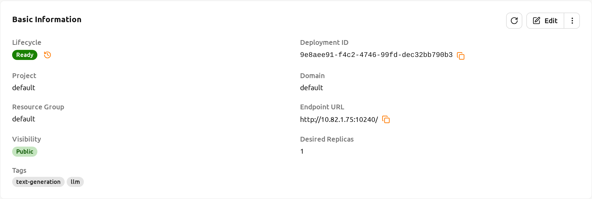
More menu (edit and delete)#
The Service Info card's header exposes an Edit button alongside a More menu. The Edit button opens the Edit Deployment modal described in Create deployment modal. The More menu currently contains the Delete Deployment action.
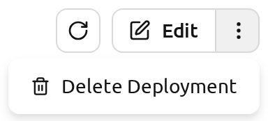
Scheduling history#
Click the Scheduling History link button next to the status tag to open the Deployment Scheduling History modal. It lists the scheduling events recorded for this deployment, newest first, with a property filter bar (ID, Phase, Result, From Status, To Status, Error Code, Message, Created At, Updated At) and a refresh button.
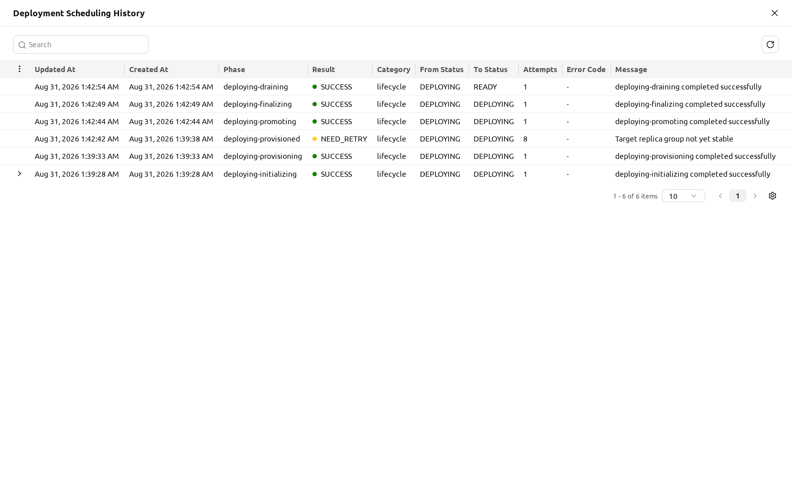
An event that recorded sub-steps has an expand arrow on the left of its row. Click it to reveal a compact inline table of that phase's sub-steps, one row per step, with the following columns:
- Step: The name of the sub-step.
- Result: The outcome of the sub-step, shown as a color-coded marker.
- Duration: How long the sub-step took, for example
120 msor1.35 s. - Time: When the sub-step started, to the millisecond.
- Error Code: The error code recorded for the sub-step, or
-when there is none. - Message: Detail or error text for the sub-step, collapsed to a single line.
The Replica Scheduling History modal, opened from the Replicas tab, uses the same table. See Replicas.
Revisions tab#
The Revisions card on the deployment detail page has three tabs: Current Revision, Revision History, and Audit Log. The Add Revision button at the top of the card is available from all tabs and opens the Add Revision modal (see Add Revision).
Current revision tab#
The Current Revision tab shows the full configuration of the revision that is currently active and serving traffic.
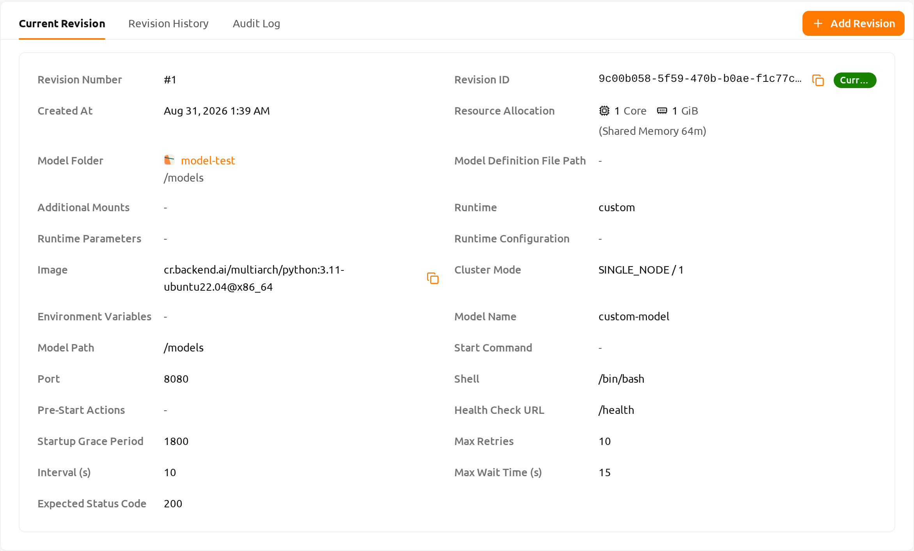
The following fields are displayed:
- Revision Number: The auto-assigned sequential number of this revision (for example, #3).
- Revision ID: The UUID of this revision.
- Created At
- Resources: The resource allocation (CPU, memory, and accelerators) for each replica.
- Model Folder: The model folder mounted into each replica, shown as a link, together with Mount Destination For Model Folder. When the revision mounts a subfolder, a
Subpath: <value>line is shown as well. - Model Definition File Path: Path to the model definition file within the model folder.
- Additional Mounts: Extra storage folders mounted into each replica.
- Runtime: The serving runtime (for example,
vLLM,SGLang, orCustom). - Runtime Parameters: Runtime-variant preset parameter values configured for this revision (for example, DType: float32, Quantization: awq). Shown only for
vLLMorSGLangrevisions that have preset parameter values configured. Shows a dash for theCustomruntime or revisions with no preset values. - Runtime Configuration: Additional
vLLMorSGLangsettings, displayed as a JSON blob. Shown only when such configuration exists for the runtime. - Image: The container image used to run the replica.
- Cluster Mode: The clustering layout of each replica's compute session (mode / size).
- Environment Variables: Key-value pairs injected into the container, displayed as a shell script block.
When the model definition file defines a model, the following fields are also shown:
- Model Name, Model Path, Start Command, Port, Shell, Pre-Start Actions, Health Check URL, Startup Grace Period, Max Retries, Interval (s), Max Wait Time (s), Expected Status Code
- Health Check Enabled: Whether periodic health checking is enabled for this revision.
Applying-in-progress state
While a different revision is being applied, the Current Revision tab shows an alert: "Applying revision N." A View Revision button in the alert opens a detail drawer for the revision currently being applied. The tab refreshes automatically every 5 seconds until the apply completes.
Empty state
If no revision has been deployed yet, the tab shows: "No revision is deployed — add a revision to activate this service."
Revision history tab#
The Revision History tab lists all revisions added to the deployment, sorted from newest to oldest by default.
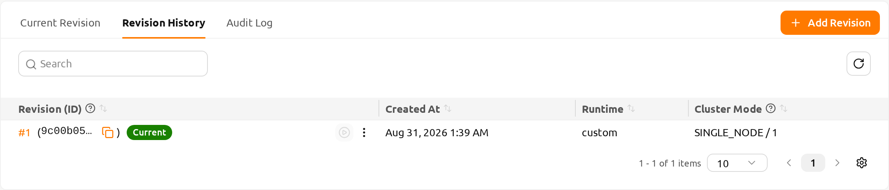
The table includes the following columns:
- Revision (ID): The revision number and its UUID. The revision number is an incrementing integer; lower numbers are older revisions. Click the revision number to open the revision detail drawer.
- Created At
- Runtime: The serving runtime used in this revision (for example,
vLLM,SGLang, orCustom). - Cluster Mode: The clustering layout formatted as "mode / size". Hover over the column header for a description.
The following columns are hidden by default but can be enabled from the column settings:
- Model Name, Image, Model Folder
Applying a revision and other actions
Each row has an Apply button and a More menu.
Apply: Click it to open a confirmation dialog. On confirm, the selected revision becomes the current revision and the deployment begins serving traffic with the new configuration. The previous revision is preserved in the history.
New revision based on this: Available from the More menu. It opens the Add Revision modal pre-filled with that revision's settings, so you can quickly modify and redeploy it.
A green Current tag marks the revision that is currently active.
A yellow Applying tag (with a loading spinner) marks a revision that is being applied.
The Apply button is disabled for the currently active revision and any revision that is being applied. It is also unavailable while the deployment is stopped, and while an apply or rollback is already in progress.
Clicking the revision number in any row opens the revision detail drawer, which shows the full configuration of that revision. The drawer also has an Apply button and a New revision based on this button; the Apply button is disabled under the same conditions as in the table.
The Runtime Parameters field also appears in the revision detail drawer for vLLM and SGLang revisions, showing the same preset parameter values as the Current Revision tab.
Audit log tab#
The Audit Log tab shows a chronological record of all actions taken on this deployment. Use it to track who changed the deployment and when.
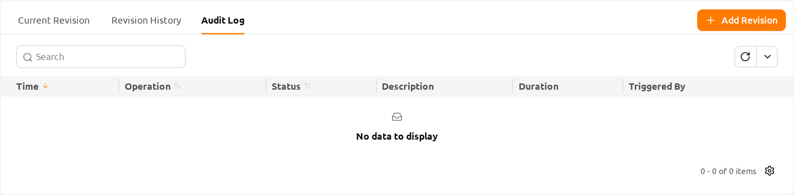
Replicas#
The Replicas tab shows the routing nodes that make up the deployment. Replica entries are filtered by a Running / Terminated radio control at the top of the tab.
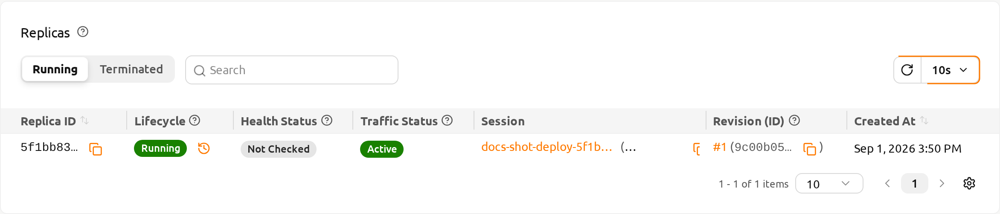
- Running: Shows replicas that are currently provisioning, running, or otherwise active.
- Terminated: Shows replicas that have completed their lifecycle.
Each replica row carries three independent status fields. They describe different axes and should be read together — a replica can be Running in its lifecycle while its health is still Not Checked, for example.
- Lifecycle Status: Where the replica is in its lifecycle — for example, Provisioning, Warming Up, Running, Terminating, or Terminated. During Warming Up, the replica is inside its startup grace period: it is starting up and waiting for the first successful health check. Failed checks are tolerated during this window; the replica moves to Running on the first success, and is terminated if it never succeeds before the window ends. The column header reads Lifecycle.
- Health Status: The current health of the replica process — Healthy, Unhealthy, Degraded, or Not Checked.
- Not Checked means the first health check has not completed yet — the replica is typically still in its Warming Up grace period. By itself it does not indicate a problem; read the Lifecycle Status to see where the replica is.
- Traffic Status: Whether the replica is currently serving requests. A replica can be removed from traffic independently of its health (for example, when it is manually deactivated), which is why traffic is shown as its own status rather than being merged into Health Status.
The three statuses are independent axes. During the Warming Up lifecycle phase a replica is within its startup grace period, and its Health Status typically reads Not Checked until the first check completes — by itself that does not indicate a problem.
Click the session name in the Session column to open the session detail drawer. Click the revision number in the Revision (ID) column to open the revision detail drawer.
Next to the status tag in the Lifecycle column is a history icon button. Click it to open the Replica Scheduling History modal for that replica, where you can review the replica's scheduling events filtered by date range, status, and other criteria.
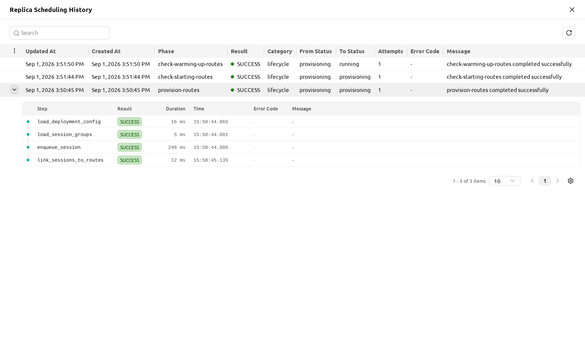
If a replica has encountered an error, clicking the error indicator on the row opens a JSON viewer modal that displays the raw error data. This is useful for diagnosing issues with individual replicas.
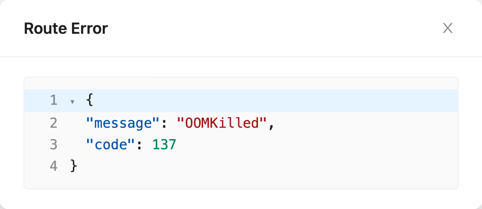
Auto scaling rules#
Auto Scaling Rules automatically increase or decrease the number of replicas for a model service based on live metrics. This conserves resources during low usage and prevents request delays or failures during high usage.
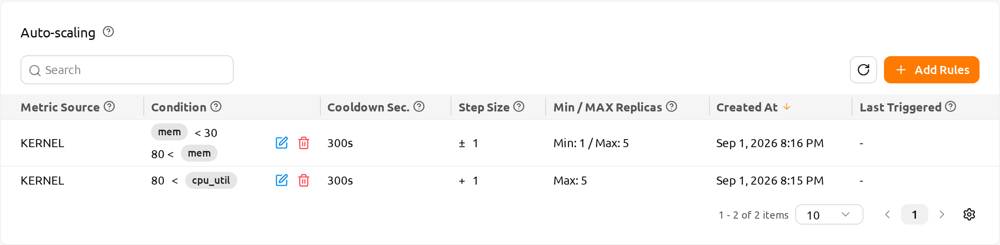
The rule list provides:
- A property filter bar to filter rules by Created At and Last Triggered datetime ranges.
- Server-side pagination.
- The following columns: Metric Source, Condition, Cooldown Sec., Step Size, Min / Max Replicas, Created At, and Last Triggered. The Step Size column automatically shows
+,−, or±based on the direction derived from the thresholds you have set. - Per-row edit and delete icons shown next to the condition summary in each row.
Click the Add Rules button to open the Add Auto Scaling Rule editor.
To modify an existing rule, click the edit icon on its row; the Edit Auto Scaling Rule editor opens with the rule's values pre-filled. The editor contains the following fields in order:
Metric Source: Select
KernelorPrometheus.Metric Name: For
Kernel, enter a metric name. Common metrics such ascpu_util,mem,net_rx, andnet_txare offered as autocomplete suggestions, and you can also type a custom name freely.Metric Name (Prometheus Preset): Shown only when Metric Source is
Prometheus. Select a preset from the dropdown; the preset's metric name, query template, and (when defined) Cooldown Sec. are filled in automatically.Condition: A segmented control for choosing the scaling direction. It provides three options.
- Scale In: Decreases replicas when the metric falls below a threshold. Sets
Metric < [threshold]. - Scale Out: Increases replicas when the metric rises above a threshold. Sets
Metric > [threshold]. - Scale In & Out: Automatically scales in or out depending on which side of the configured range the metric crosses. Sets
Metric < Min ThresholdorMetric > Max Threshold.
- Scale In: Decreases replicas when the metric falls below a threshold. Sets
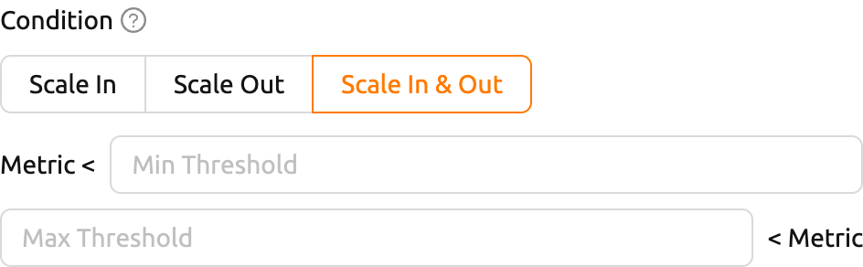
Step Size: A positive integer specifying how many replicas to add or remove per scaling event. The
-,+, or±sign is shown automatically based on the selected condition (Scale In / Scale Out / Scale In & Out).- Only a minimum threshold is set:
[metric] < [minThreshold]triggers Scale In (replicas decrease when the metric falls below the threshold). - Only a maximum threshold is set:
[metric] > [maxThreshold]triggers Scale Out (replicas increase when the metric rises above the threshold). - Both thresholds are set: if
[metric] < [minThreshold], replicas scale in; if[metric] > [maxThreshold], replicas scale out.
- Only a minimum threshold is set:
Cooldown Sec.: The time, in seconds, to wait after a scaling event before the next evaluation.
Min Replicas and Max Replicas: The lower and upper bounds that auto-scaling enforces on the replica count. Auto-scaling will not reduce the number of replicas below Min Replicas or increase it above Max Replicas.
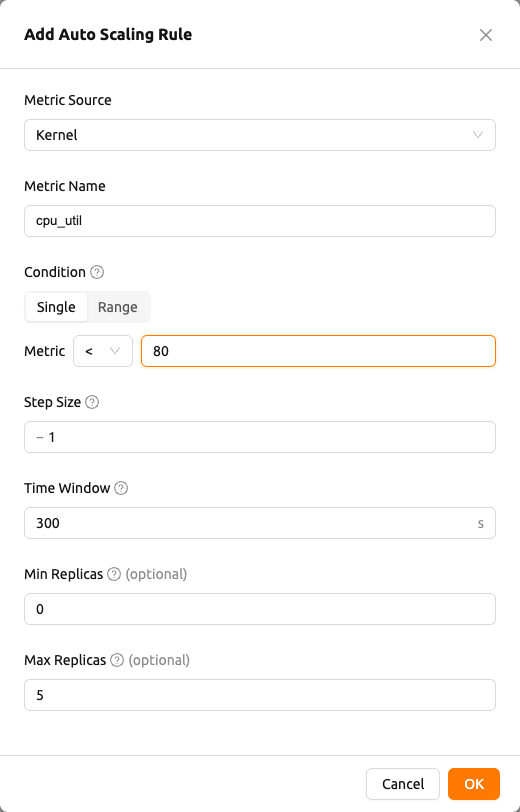
Generating tokens#
Once the deployment is HEALTHY, you can click on its name in the Deployments list to open the Deployment Detail Page. The Service Endpoint URL is shown in the Service Info card. If Open to Public is enabled, end users can access the deployment without a token. If it is disabled, create and share a token as described below.
Access tokens are managed in the Access Tokens card at the bottom of the Deployment Detail Page. Hover the ⓘ icon next to the card title for a summary: "Manage access tokens for authenticating API requests to this deployment's endpoint."
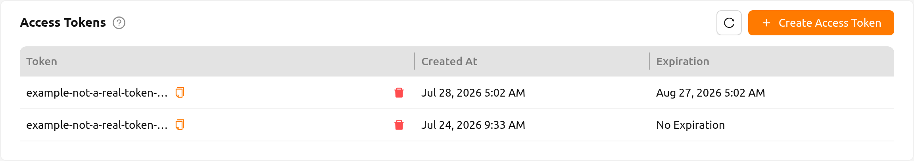
Creating an access token#
- Click the
Create Access Tokenbutton in the card header. You can also click Add Access Token in the Private deployment banner at the top of the page — it opens the same dialog. - Choose an Expiration for the token:
7 Days,30 Days, or90 Days: The token expires that many days from now.7 Daysis the default.- Custom Expiration: Reveals a date-and-time picker so you can set the exact expiry. The chosen moment must be in the future.
- No Expiration: Sets the expiration to a far-future date (
December 31, 2099), so the token effectively never expires. This date — not a literal No Expiration label — is what appears afterward in the token dialog, the access token list, and the Chat token selector.
- Click
Create Access Tokento issue it.
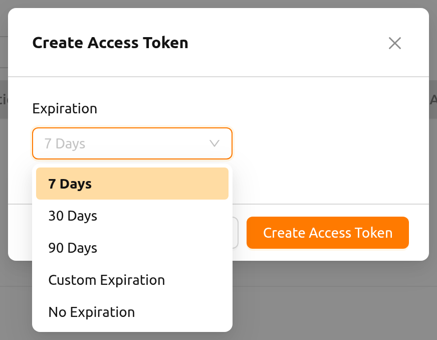
The
Create Access Tokenbutton is disabled until the manager has issued a network endpoint for the deployment; while it is disabled, its tooltip reads "The network endpoint has not been issued yet." It is also disabled for a deployment you do not own ("Only the deployment owner can manage access tokens.") and for a deployment that is stopping or no longer active ("The deployment is stopping or no longer active."). Those last two conditions disable deleting a token as well.
After the token is issued, a Token dialog shows the token value once, together with a copy button and the expiration date you chose. Copy the token from this dialog, or from the table afterwards.
Access token list#
The card lists every access token issued for this deployment, newest first:
- Token: The token value, shown truncated with a copy button. A delete icon in the same cell removes the token.
- Created At: When the token was issued.
- Expiration: When the token expires. Tokens created with No Expiration show
December 31, 2099.
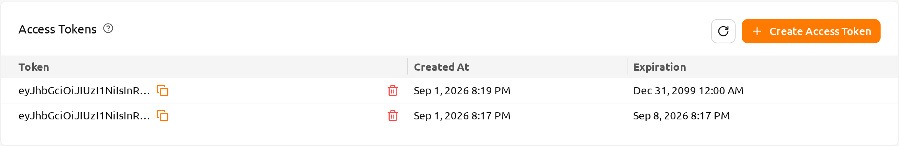
Send the token in the Authorization request header:
| Key | Value |
|---|---|
| Content-Type | application/json |
| Authorization | BackendAI <token> |
Deleting an access token#
Click the delete icon in a token's row. The Delete Access Token dialog asks you to type delete to confirm; the OK button stays disabled until the typed text matches.
Deleting an access token is irreversible and takes effect immediately. Any client still sending that token will start receiving authentication failures.
Terminating a deployment#
When a deployment is no longer needed, it is recommended to terminate it to free up scheduler resources. To terminate the deployment, open the More menu on the Service Info card and select Delete Deployment. A typed-confirmation modal appears — type the deployment name to enable the Permanently Delete button. The terminated deployment then appears in the Destroyed filter view.
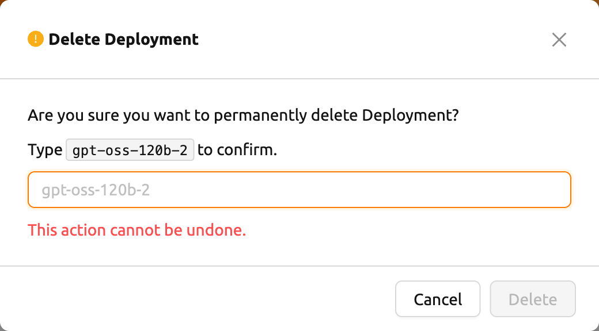
Accessing your deployment#
Making API requests#
To allow end users to call your deployment, share the deployment URL with them. If the Open to Public option is enabled, you can share the Service Endpoint URL from the Deployment Detail Page directly. If the deployment is private, share the URL along with an access token.
Here is a simple command using curl to verify that the deployment is responding:
export API_TOKEN="<token>"
export MODEL_SERVICE_ENDPOINT="<model-service-endpoint>"
curl -H "Content-Type: application/json" -X GET -H "Authorization: BackendAI $API_TOKEN" "$MODEL_SERVICE_ENDPOINT"By default, end users must be on a network that can reach the deployment URL. If the deployment was created in a closed network, only end users with access to that network can reach the service.
LLM chat test#
If you have created a Large Language Model (LLM) service, you can test the LLM in real-time.
When the deployment is ready, a Test in Chat button appears in the Deployment is ready banner at the top of the Deployment Detail Page. Click it to start the test.
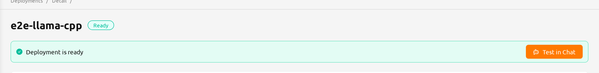
You will be redirected to the Chat page, where the model you created is automatically selected. Using the chat interface provided on the Chat page, you can test the LLM model. For more information about the chat feature, please refer to the Chat page.
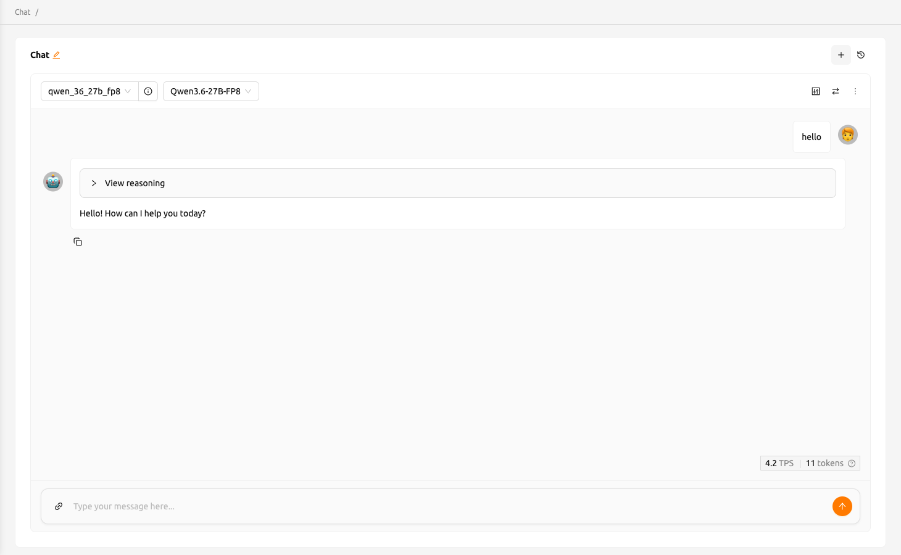
Choosing a token on the Chat page#
When the Chat page is talking to a Backend.AI deployment, the token field is a selector listing that deployment's access tokens rather than a plain text box:
- Every option shows the last six characters of the token as a code chip, plus its expiry date (for example
~ Aug 26, 2026, or~ Dec 31, 2099for tokens created with No Expiration). All tokens begin with the same JWT header, so the tail is the part that actually tells them apart. Hover an option to see the full issued → expiry timestamps. - Expired tokens are hidden. Only tokens that are still valid appear in the list.
- When the field is empty, the most recently created valid token is selected for you. If you clear the selection deliberately, it is not re-applied.
- The gear icon next to the field (Access Token Settings) opens the deployment's Access Tokens section, so you can issue a new token without losing your place. The list reloads when you come back, so a token you just created is immediately selectable.
If the deployment has no valid token, the selector is empty; create one first as described in Access Tokens.
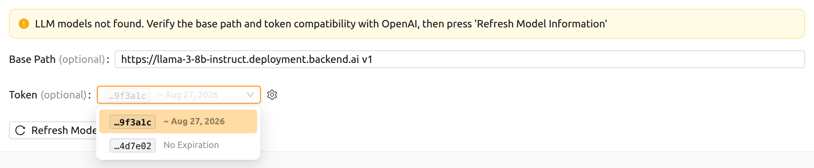
If you encounter issues connecting to the API, the Chat page will display options that allow you to manually configure the model settings. To use the model, you will need the following information:
- baseURL (optional): Base URL of the server where the model is located. Make sure to include the version information. For instance, when utilizing the OpenAI API, you should enter https://api.openai.com/v1.
- Token (optional): An authentication key to access the model service. Tokens can be generated from various services, not just Backend.AI. The format and generation process may vary depending on the service. Always refer to the specific service's guide for details. For instance, when using the service generated by Backend.AI, please refer to the Generating Tokens section for instructions on how to generate tokens.
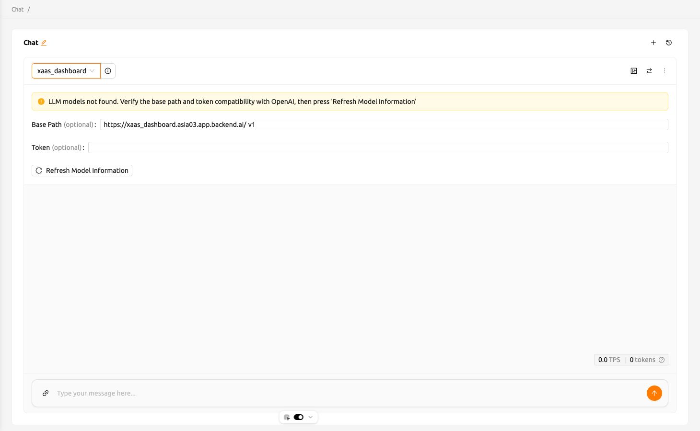
Model Store#
The Model Store provides a card-based gallery of pre-configured models that you can browse, search, and deploy. You can access the Model Store from the sidebar menu.
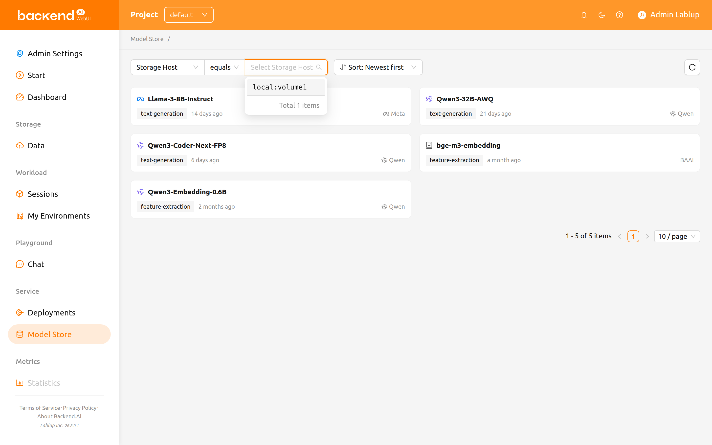
Browsing and searching models#
The page uses a filter and sort layout at the top:
Property filter bar: Add one or more conditions to narrow the card list. Two properties are available:
- Model Name: Match model cards by name.
- Storage Host: Match cards by the storage host that holds the model folder. Instead of typing a host name, pick one from the dropdown of storage hosts registered on the server; the value is committed as a filter condition as soon as you select it. Use the
equalsoperator to keep only that host, ornot equalsto exclude it.
Sort: Choose how results are ordered. The available options are
Name (A→Z),Name (Z→A),Oldest first, andNewest first.Refresh: Click the refresh button to reload the card list.
Because you pick the host from a list rather than typing it, a mistyped host name cannot silently produce an empty result set. Conditions stack with
AND, so you can combine a name condition with a storage-host condition.
The model list is automatically scoped to the current domain's MODEL_STORE project. There is no separate domain filter — all cards visible on this page already belong to your domain.
Each card displays the model brand icon, title (or name when no title is set), task tag, relative creation time, and the author with an icon. Cards that have no compatible presets for the current project are shown at 50% opacity. You can still open such a card to view its details, but its Deploy button is disabled and an error alert is shown in the drawer: No compatible presets available. This model cannot be deployed.
If the MODEL_STORE project is not set up on the server, the page shows a Model Store project not found message with instructions to contact an administrator. If no model cards match your filters, the page displays No models found.
The list is paginated at the bottom. You can change the page size between 10, 20, and 50 entries.
Model card details#
Click a card to open the model card drawer on the right side of the page. The drawer shows the model title and description at the top, followed by the task, category, labels, and license tags, and then a details list with the following items:
- Author
- Architecture
- Framework (each framework is shown with an icon)
- Version
- Created and Last Modified timestamps
- Model Folder: A clickable link that opens the folder explorer for the model storage folder
- Min Resource: The minimum resource requirements (CPU, memory, GPU)
If the model card includes a README, it is rendered as a README.md card at the bottom of the drawer.
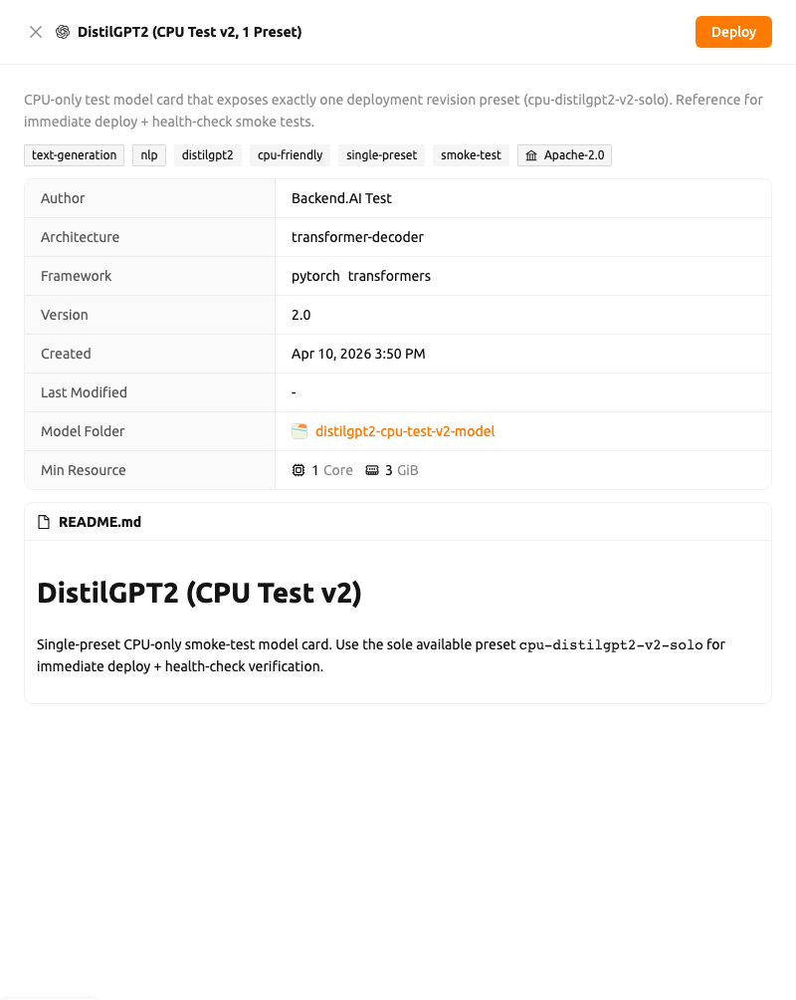
Deploying a model#
Click the Deploy button in the drawer header to deploy the model as a service. The deploy flow behaves in one of two ways:
Auto-deploy: If the model has exactly one available preset and the current project has exactly one accessible resource group, the deployment is created silently without showing a modal. You are then navigated to the Deployment Detail Page.
Deploy Model modal: Otherwise, a Deploy Model modal opens with the following required fields:
- Preset: A grouped dropdown of available resource presets. When presets span multiple runtime variants, options are grouped by runtime variant name; otherwise the options are shown as a flat list.
- Resource Group: The resource group where the service will run.
Click the Deploy button in the modal to start the deployment. A success toast confirms that the model has been deployed, and you are navigated to the Deployment Detail Page.

If the selected model has no compatible presets for the current project, the drawer's Deploy button is disabled and deployment is blocked until a compatible preset is available.